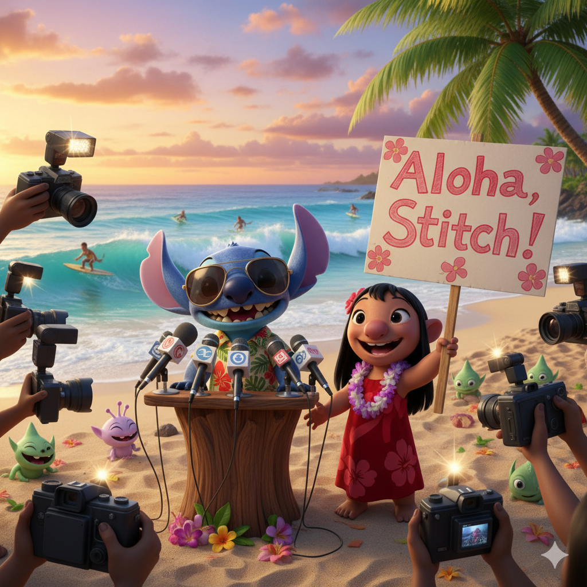

Stitch vira herói no Havaí após confusão intergaláctica

O alienígena mais travesso da galáxia aprontou de novo — mas, dessa vez, para o bem!
Na última terça-feira, moradores de Kauai relataram uma “chuva de cocos misteriosa”
que quase causou um grande acidente na praia de Lilo. Stitch, com seus reflexos
super-rápidos, conseguiu impedir que os cocos caíssem sobre os turistas,
virando o herói do dia.
Fontes próximas à Lilo afirmam que Stitch já está planejando um novo “plano de defesa”
para proteger as praias da ilha. “Ele é bagunceiro, mas tem um coração enorme”, disse
Lilo em entrevista.